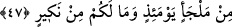

“–Ey Zünnûn! Yazık sana. Ben yirmi yıldan beri bir şey istemeyi arzu ediyorum.
Sadece sahibinden çekindiği için çalışan ve yaptığı işin karşılığını peşin olarak isteyen
kötü bir işçi konumuna düşmekten endişe ettiğim için Allah’tan hayâ ediyor ve
çekiniyorum.”
Şu husus iyice anlaşıldı ki gayr ve mâsivâyı kalpten çıkarıp Allah Teâlâ ile meşgul
olmak, Allah’ın has ve hâlis kullarının sıfatlarıdır. Kim bu yolu bulursa kazanır. Kim de
bu yolu şaşırırsa zarar ve ziyân eder. Bu iş Allah’ın kudret elindedir. Çünkü gerçek dost
ancak O’dur. Öyle ise kul Allah’tan hidâyet ve inâyet istemelidir ki Allah onu nefs-i
emmârenin karanlıklarından çıkarıp ruhânî tecellîyât nurlarına ulaştırsın. Bu sayede
Allah ona kendisini tehlikelerden koruyup kendi zâtına ulaştıracak bir yol açsın.
Hikâye edilir ki: Yaşlı bir adam bir genci de yanına alarak hac niyetiyle yola çıktılar.
İhram giyip niyet ettiler. “Lebbeyk Allahümme lebbeyk: Buyur, emret Allah’ım…”
diyerek telbiye getirdiler. Bu yaşlı zât “lebbeyk” deyince gaibten bir ses “la lebbeyk”
yani “senin telbiyeni ve haccını kabul etmiyoruz” şeklinde karşılık verdi. Tabiî ki bu
durum gencin dikkatini çekti ve yaşlı adama “cevabı duyuyor musun?” dedi. Yaşlı adam
“ben yetmiş yıldır bu cevabı duyuyorum” dedi. Bu sefer genç “peki öyleyse niye kendini
boş yere yoruyor, bunca zahmete giriyorsun?” deyince yaşlı zât “başka hangi kapıya
sığınabilirim ki” dedi. Yine gâipten bir ses: “Artık kabul ettik!” dedi. İşte bu, Allah’ın
kullarına özel bir hidâyetidir. Cidden iyi anlamalısın.
Sâib şöyle demiştir:
Bedenin timsahın dişleri arasına düşse de umutsuz olma,
Elbette aşk denizinin girdabına kapılan gönlün bir sâhili vardır.
47. Allah’tan, geri çevrilmesi imkânsız bir gün gelmezden önce, Rabbiniz(in
çağrısın)a uyun. Çünkü o gün, hiçbiriniz sığınacak yer bulamazsınız, itiraz da
edemezsiniz.
“Allah’tan,” artık hüküm verildikten sonra bir daha “geri çevrilmesi imkansız bir
gün gelmezden önce,” Peygamberinin diliyle sizi îmâna dâvet ettiği zaman, azaptan
kurtulmak için “Rabbiniz(in çağrısı)na uyun. Çünkü” bütün yaptıklarınız amel
defterlerinizde yazılmış olup kendi organlarınız da buna şâhidlik edeceğinden “o gün
hiçbiriniz sığınacak yer bulamazsınız, itiraz da edemezsiniz.”
Âyette “icâbet” emrinin Rab ismine bağlanmasında, artık bir daha dönüşün
yokluğunun ifâde edilmesinde ve bütün mânâları şümûlüne alan Allah isminin
getirilmesinde gizli olmayan bir takım nükteler vardır. Müfti Sa’dî’nin Hâşiyesi’nde de
böyledir. Bu nükteler kısaca şöyle izah edilebilir: Bir hükmü müştak bir kelimeye